모호한 요구를
공통의 목표로
사용자, 사업, 운영자의 요구를 하나의 문제 정의로 묶고 우선순위와 성공 기준을 명확히 합니다.
- 문제·대상 사용자·핵심 가치 정의
- 범위와 우선순위 합의
- 결정 근거와 제외 범위 기록
IT 서비스 PM · 기획·운영 리드
직접 설계할 수 있는 실무 감각을 바탕으로 사용자·사업·개발·운영의 판단을 정렬하고, 팀이 같은 목표로 움직이게 하는 역할을 해왔습니다. 서비스 구축뿐 아니라 출시 이후 운영과 책임까지 연결합니다.
01 · 리더로서의 기여
직접 산출물을 만들 수 있지만, 더 중요한 역할은 팀이 판단하고 실행할 수 있는 구조를 만드는 것입니다.
사용자, 사업, 운영자의 요구를 하나의 문제 정의로 묶고 우선순위와 성공 기준을 명확히 합니다.
역할, 결정권과 점검 주기를 정해 여러 조직과 협력사가 같은 목표를 향해 움직이게 합니다.
전문가의 기술 판단을 사용 흐름, 비용, 일정과 운영 위험의 언어로 바꾸고 선택 가능한 대안을 만듭니다.
서비스가 특정 개인에게 의존하지 않도록 담당자, 문서, 권한과 대응 기준을 운영 체계로 남깁니다.
02 · 리더십과 자기인식
리더의 역할은 모든 일을 직접 하는 것이 아니라, 중요한 문제와 책임이 보이게 만드는 것이라 생각합니다.
프로젝트 규모보다 실제로 팀이 움직이는 방식을 중요하게 봅니다.
목표, 우선순위, 수용 기준과 제외 범위를 초기에 분명히 합니다.
일정·품질·기술·운영 위험을 조기에 드러내 선택 가능한 대안으로 만듭니다.
누가 검토하고 결정하며 운영할지를 문서와 회의 구조에 반영합니다.
프로젝트가 끝난 뒤에도 담당자가 이어갈 수 있는 기록과 운영 원칙을 남깁니다.
필수·권장·후순위로 범위를 나누고 결정 시한과 마일스톤을 먼저 합의합니다. 세부 완성도는 한 번에 끝내기보다 반복 개선으로 가져갑니다.
초기 대응 후 담당자와 결정권을 다시 나누고, 같은 문제가 반복되지 않도록 기준과 점검 방식을 남깁니다.
절대 트래픽보다 활성·이탈·사용 맥락을 분석해왔습니다. 커머스·보험 프로젝트 경험을 바탕으로 전환과 재사용 관점의 지표 설계를 강화하고 있습니다.
연동 조건, 데이터 흐름, 예외와 검증 시나리오를 정리하고 담당 엔지니어의 검토를 거쳐 판단의 정확도를 높입니다.
03 · 대표 서비스와 책임
기능을 만드는 데서 멈추지 않고 방향과 역할을 정리하고, 위험을 낮추며, 출시 이후 운영 기준까지 연결해왔습니다.
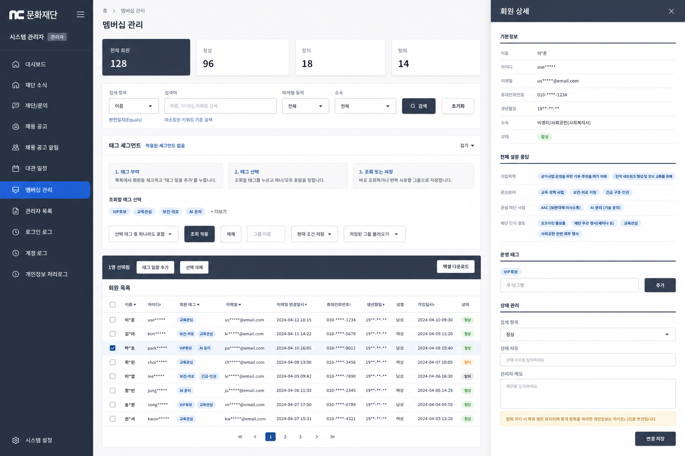
회원가입 개발·관리자 CMS 기능 주도
회원과 운영자가 만나는 핵심 흐름을 정의하고, 개발 범위와 우선순위부터 품질 검증과 운영 인계까지 이끌고 있습니다.
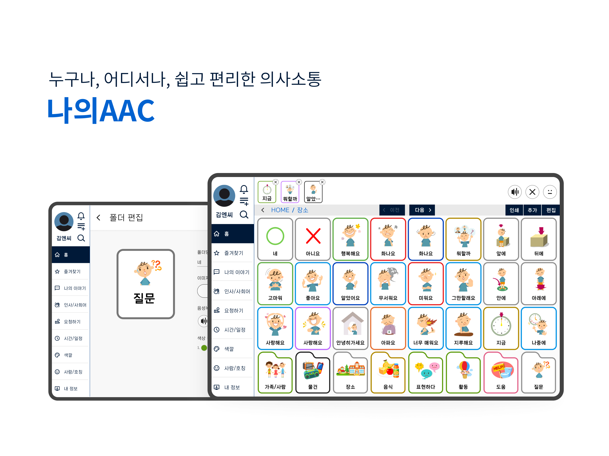
총괄 PM · 신규 구축과 출시 후 품질·운영 책임
연구 결과, 사용자 요구, 접근성, 개발과 운영 조건을 하나의 서비스 기준으로 정리하고 여러 전문조직의 결정을 조율했습니다.
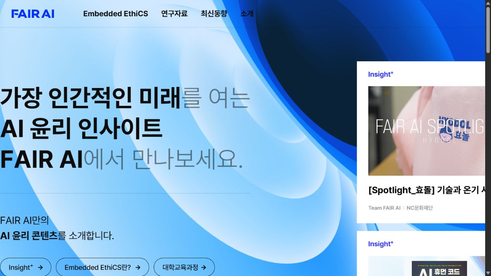
총괄 PM · 서비스와 콘텐츠 운영 구조 기획
출처와 형식이 다른 뉴스·논문·보고서·행사를 하나의 탐색 경험과 지속 가능한 운영 흐름으로 묶었습니다.
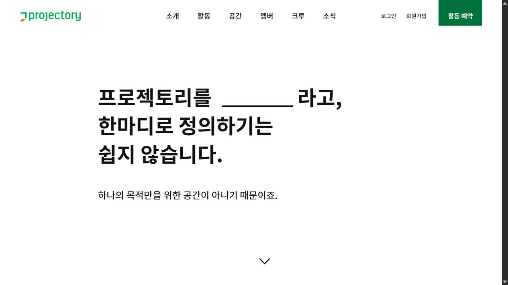
서비스 기획 · 개발 범위와 수행 관리
회원 경험과 관리자 운영 요구를 함께 정리하고, 기능 범위와 개발 쟁점을 관리해 서비스 고도화를 진행했습니다.
서비스·인프라·업무 시스템·정보보안·개인정보보호 담당
대외 서비스만 관리하는 PM이 아니라, 재단의 가상·물리 서버와 사업장 네트워크, 업무용 소프트웨어와 전산장비, 출입통제, 정보보안·개인정보보호 법령 이행까지 담당합니다. 서비스 개발과 조직 IT 운영을 분리하지 않고 같은 위험과 책임의 구조로 관리하고 있습니다.
초기 경력에는 현장을 직접 이해하고 화면과 업무 흐름을 설계했습니다. 이 경험이 현재 일정표만 관리하지 않고 실무 쟁점을 함께 판단하는 기반이 되었습니다.
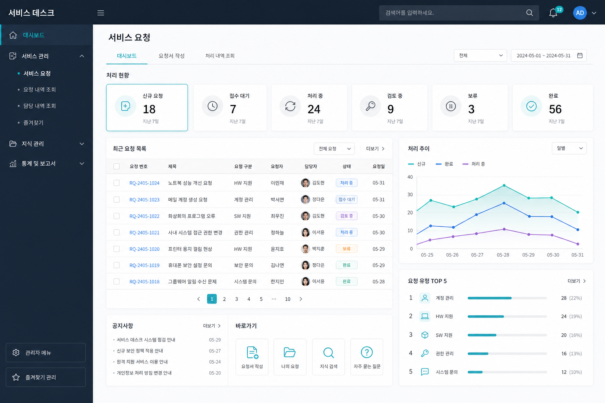
사용자 조사에서 시작해 요청·처리·통계 흐름을 다시 설계하고, 이후 변경을 운영자가 설정할 수 있는 구조로 개편했습니다.
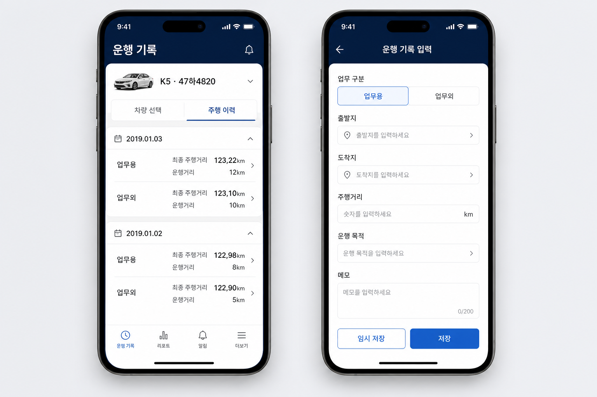
중단된 프로젝트에 투입돼 현업 불만과 누락된 흐름을 다시 정리했습니다. 특히 모바일 운행 기록부를 중심으로 현장에서 기록하고 관리자가 확인하는 구조를 연결했습니다.
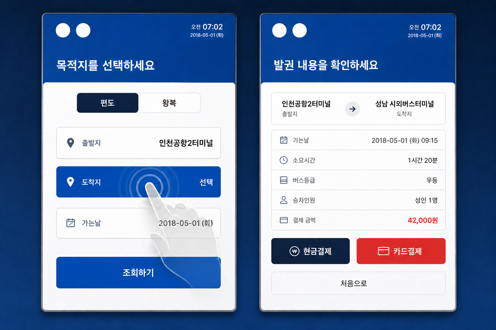
기존 키오스크의 사용성 문제를 분석하고, 선택 과정을 단순화해 목적지·날짜·결제까지 이어지는 발권 흐름을 다시 설계했습니다.
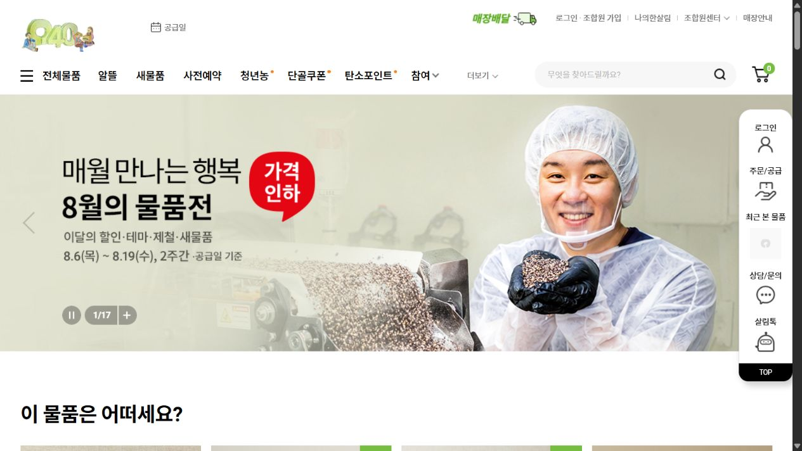
회원가입·탈퇴, 상품조회와 공통 화면을 설계했습니다. 해당 개편 서비스는 웹어워드 생활쇼핑몰 부문 최우수상을 수상했습니다.
현재 서비스 보기 ↗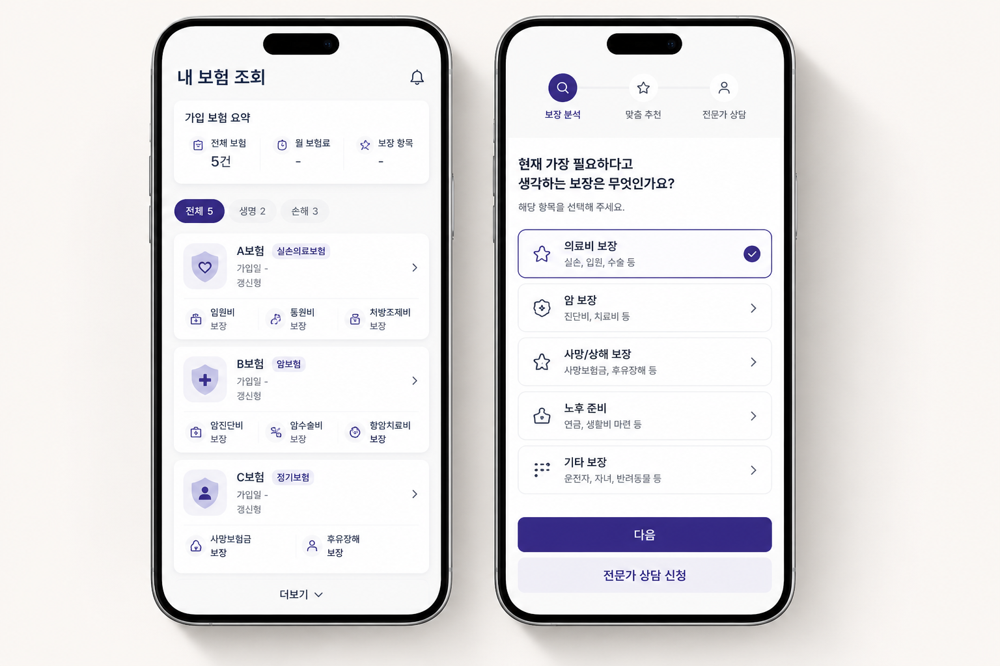
보험 조회, 보장 분석·추천, 전문가 상담을 포함한 서비스에서 관리자 화면, 고객센터와 일부 사용자 화면을 기획했습니다.
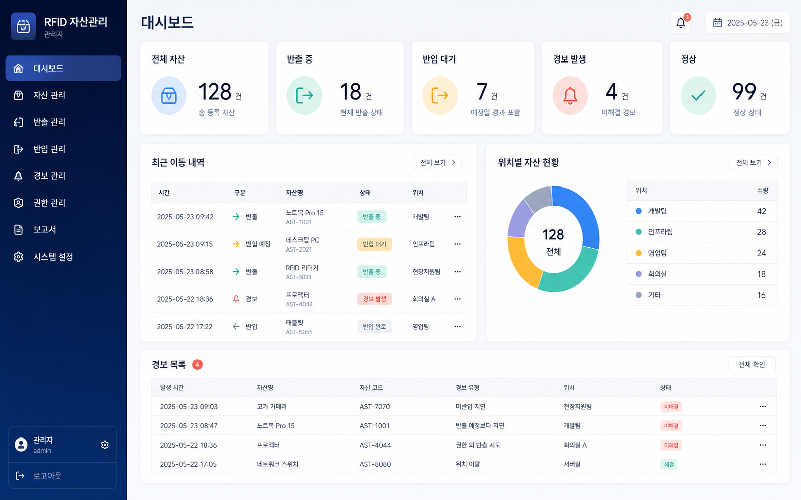
Active RFID를 부착한 보안자산의 반입·반출과 지정 구역 이탈을 모니터링하는 사용자·관리자 화면을 설계했습니다.
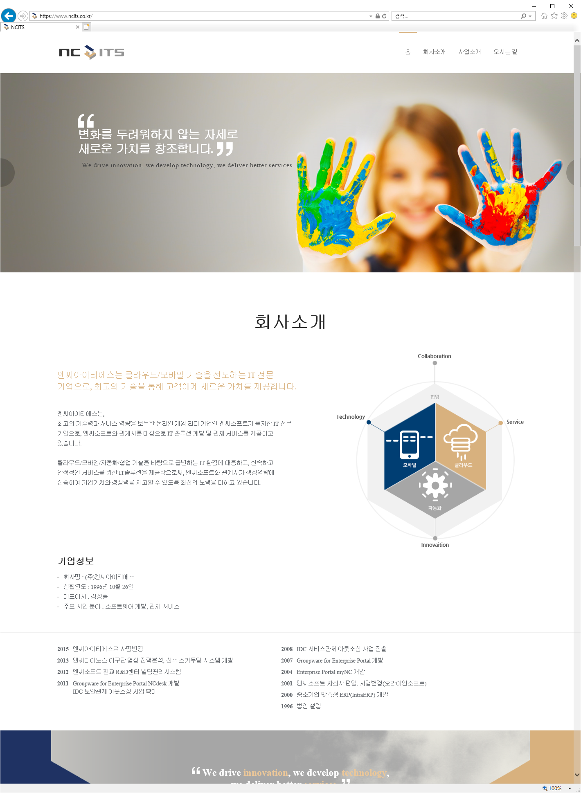
사업과 기술 역량을 외부 방문자가 이해할 수 있도록 정보 구조와 주요 콘텐츠를 정리해 공식 홈페이지 구축을 진행했습니다.
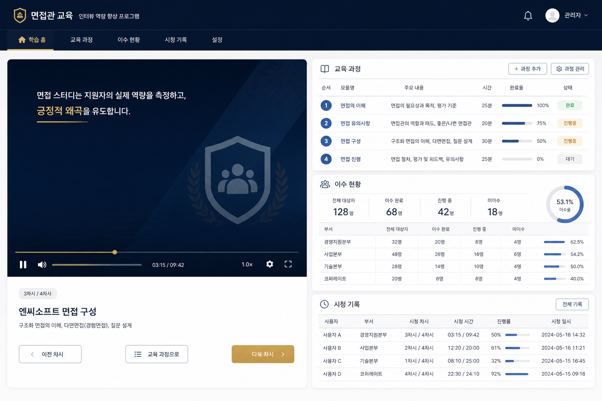
영상 시청과 이수 판정, 예외 처리, 관리자 확인 흐름을 설계하고 버퍼링·동시 접속 등 실제 운영 조건을 개발 범위에 반영했습니다.
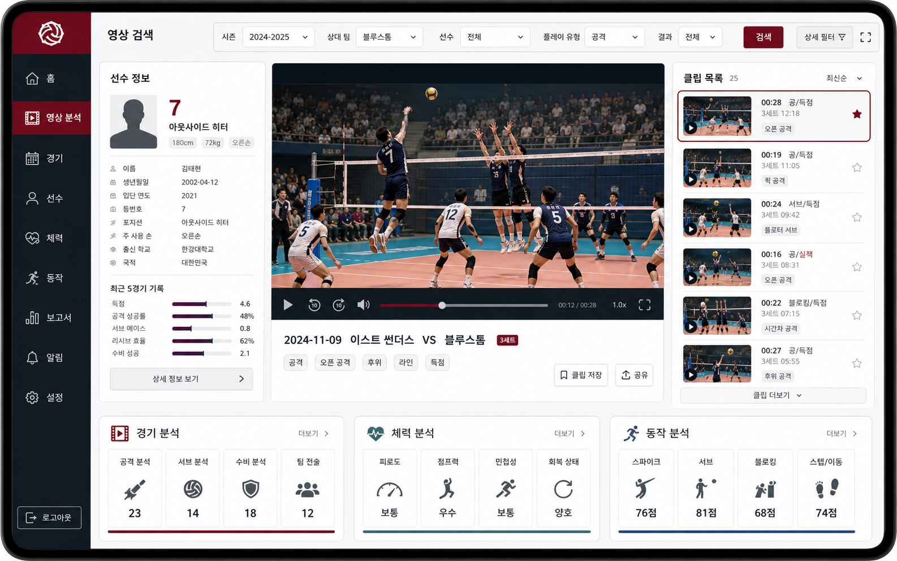
경기 영상과 분석 데이터를 앱에서 탐색하는 사용자·관리자 화면을 기획하고, 서비스에 필요한 보안 솔루션을 검토했습니다.
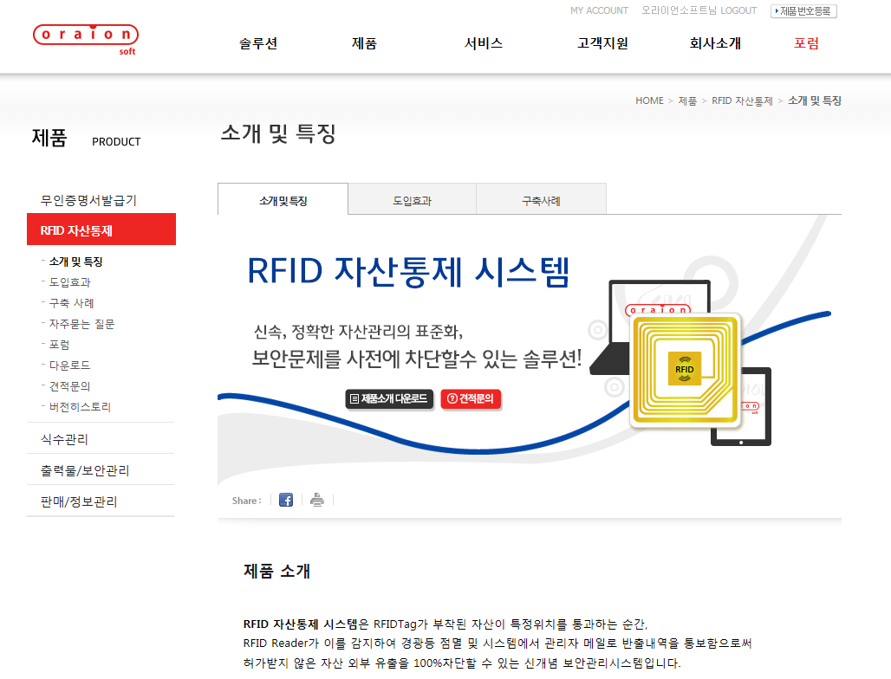
제품군별 탐색과 문의, 맞춤 정보 제공, 운영자의 콘텐츠 갱신 흐름을 함께 고려해 사용자·관리자 화면을 설계했습니다.
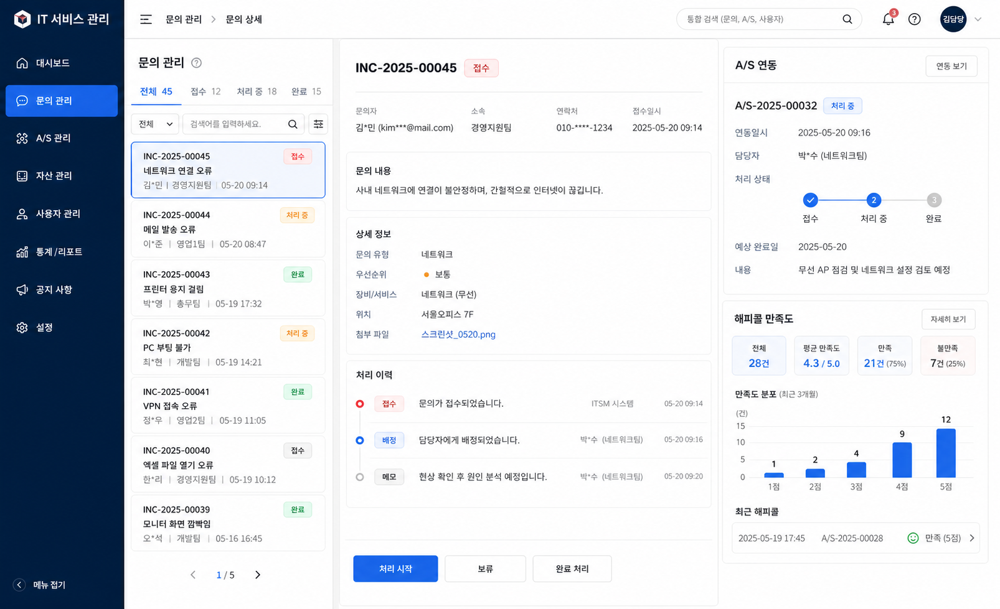
분리돼 있던 헬프데스크와 A/S 흐름을 연결하고, 처리 결과와 만족도 통계를 같은 운영 체계에서 확인하도록 개선했습니다.
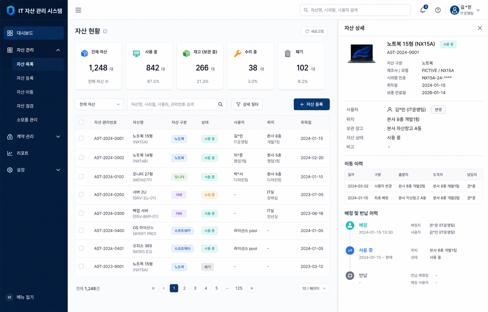
엑셀 중심 관리를 시스템으로 전환하고 ERP 연계, 자산 상태·현재 사용자·입출고와 이동 이력을 조회하는 흐름을 설계했습니다.
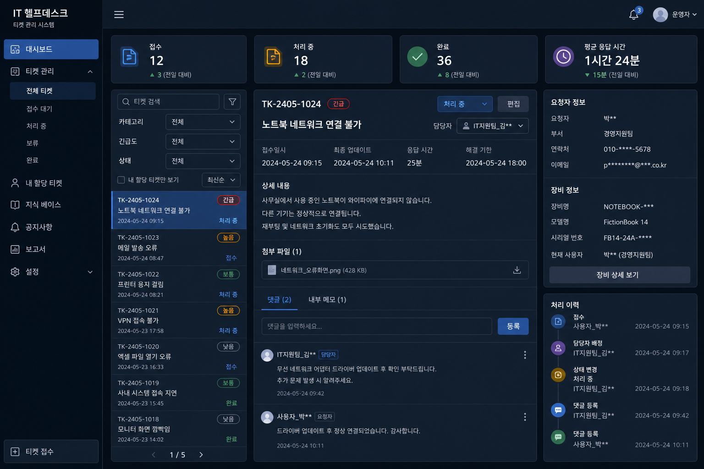
현업에서 쓰던 엑셀 기록과 ERP의 장비·사용자 정보를 연결해, 반복 문의를 이력과 데이터로 관리하는 기획의 출발점이 됐습니다.
협업 도구, 금융, 공공 환경, 대중교통, 기업 업무와 스포츠 운영까지 서로 다른 현장에서 요구를 구조화하고 개발·운영의 접점을 정리해왔습니다.
그룹웨어 상품 경쟁력 강화 프로젝트에서 서비스 기획을 이끌었습니다.
임직원이 모바일에서 의료 지원 서비스를 이용할 수 있도록 신규 화면과 기능을 기획했습니다.
미세먼지 정보를 모바일에서 확인하는 앱 서비스의 화면과 사용 흐름을 기획했습니다.
버스 차내단말기 프로그램 고도화 기획에 참여했습니다.
인사·복지·결재 등 서로 다른 규칙을 가진 사내 시스템에서 사용자 화면, 관리자 정책과 예외 처리를 설계했습니다.
임직원 티켓 추첨과 선수정보 시스템의 신규 개발을 기획했습니다.
04 · 경력
경영지원팀 매니저 · IT 서비스·인프라·보안 운영
나의AAC 신규 구축과 출시 후 운영, FAIR AI·프로젝토리·대표 홈페이지의 품질과 연계 시스템을 담당했습니다. 현재는 가상·물리 서버와 사업장 네트워크, 업무용 소프트웨어와 전산장비, 출입통제, 정보보안·개인정보보호 법령 이행과 사고 대응 체계까지 맡고 있습니다. 2026년부터 가치지음 TF를 겸직하며 회원가입 개발과 관리자 CMS 기능의 기획·개발 관리·품질 검증을 주도하고 있습니다.
인사이트·기획팀 매니저(과장) · 서비스 기획
LG U+ 그룹웨어 상품 경쟁력 강화, 키움에셋 온라인 보험 앱, 한살림 장보기 개편에서 앱·웹·관리자 서비스의 정책과 화면을 기획했습니다.
개발팀 과장 · 모바일·웹 서비스 기획
미세먼지 앱 서비스와 버스정보시스템 차내단말기 프로그램 고도화 등 공공·교통 영역의 모바일·웹 기획을 수행했습니다.
개발실 기획팀 과장 · 사내 시스템 PM
주식회사 엔씨와 관계사의 서비스데스크, 전자결재, 평가, 연말정산, 자산, 출입통제, 메디컬센터, 임직원 티켓 추첨·선수정보 등 다양한 업무 시스템을 기획·구축·운영했습니다. 운영 요청을 처리하는 역할에서 출발해 프로젝트 방향과 일정, 화면·데이터 구조를 책임지는 역할로 성장했습니다.
엔씨아이티에스 파견 · 운영팀 주임
자산관리, IT 헬프데스크와 A/S 연동 시스템을 운영하며 사용자 문의를 분석하고 기능 개선으로 연결했습니다. 현장의 반복 문제를 시스템으로 바꾸는 기획 경력의 출발점이었습니다.
05 · 리더의 실무 기반
기술 자체를 과장하기보다, 각 전문조직과 대화하고 품질과 운영 기준을 결정하는 데 활용해온 기반을 정리했습니다.
사용자와 운영자의 요구를 개발자가 구현하고 검증 담당자가 확인할 수 있는 기준으로 만듭니다.
기획부터 계약, 개발, 검수와 운영까지 전체 연결 관계와 의사결정을 관리합니다.
세부 구현을 직접 주장하기보다 데이터를 판단 근거로 쓰고 엔지니어와 기술 선택의 조건을 합의합니다.
서비스 출시 이후의 가용성과 비용뿐 아니라 조직 구성원이 매일 쓰는 기반 환경까지 운영 책임에 포함합니다.
법적 요구를 문서로만 남기지 않고 계정·단말·시설·서비스의 실제 권한과 점검·대응 절차로 연결합니다.
도구 자체보다 누가 무엇을 기록하고 언제 확인할지를 협업 규칙으로 정합니다.
진행 상황보다 막힌 결정과 위험을 먼저 확인하고 필요한 지원을 연결합니다.
도메인보다 문제와 운영 구조를 이해하는 능력을 중심으로 경력을 확장했습니다.
학점은행제 경영학 전공 졸업 · 수원과학대학교 컴퓨터공학 전공(중퇴)
06 · 동료와 외부의 검증
“다양한 협력 기관과의 소통을 원활히 관장하고, 복잡한 일정과 리스크 관리에 힘써 높은 완성도의 서비스 구축에 기여했습니다.”
— 2022년 성과관리 리더 피드백 요약
07 · 책과 프로젝트 회고
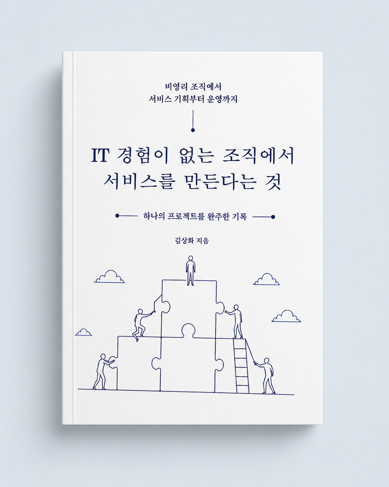
나의AAC를 구축한 2년 반 동안 서비스 기획, 개발, 접근성, 보안과 개인정보, 계약과 출시 이후 운영을 함께 책임하며 겪은 판단과 시행착오를 정리한 프로젝트 회고입니다. 결과를 포장하기보다 왜 결정이 늦어졌고 역할과 책임이 어디에서 흔들렸는지 기록했습니다.
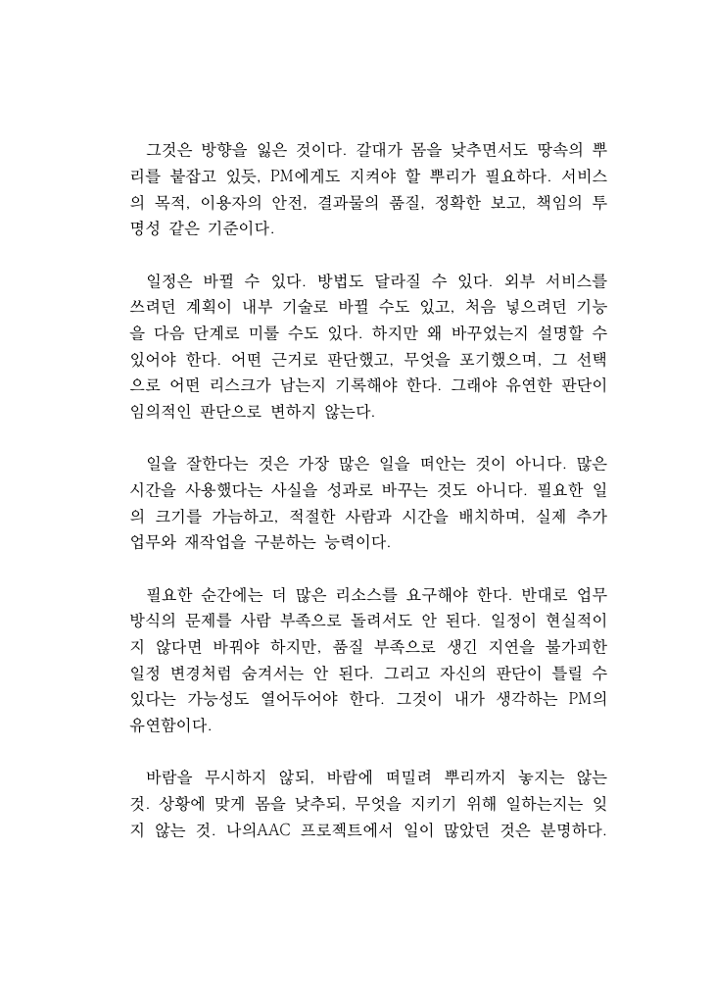
“좋은 결과는 건강한 과정을 증명하지 않는다.”책 소개 사이트에서 목차와 에피소드 보기
서비스 기획과 프로젝트 리드, 여러 조직 사이의 조율, 출시 이후 IT 운영 체계를 함께 책임질 수 있습니다.
kksh0378@naver.com